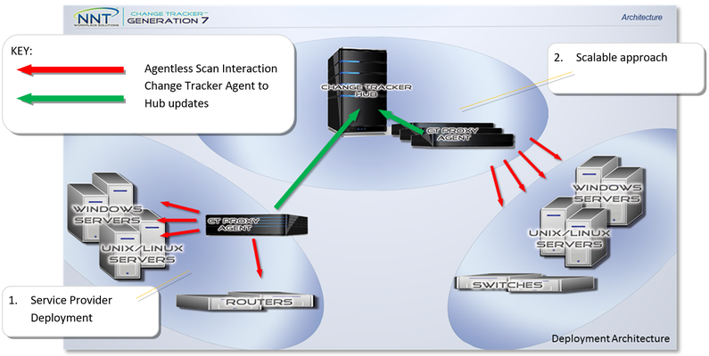

Overview
Netwrix Change Tracker supports an Agentless approach to monitoring, which is useful for endpoints such as firewalls, routers, switches, appliances, or legacy Unix hosts. This approach is also ideal for quick, software-free implementations for monitoring Windows/Linux systems. Agentless File Integrity Monitoring (FIM) is performed using a dedicated Proxy Agent or the Proxy Agent function of the Netwrix Change Tracker Agent.
Agentless scanning options include SSH, Telnet with full shell/command operation, CLI interaction, and Windows SMB/Named Pipe. Scans can be operated using the NNT-FileHash binary, a dissolvable/transient program that simplifies system integrity monitoring where file hash-based tracking is required. The Proxy Agent concept provides advantages in that setup and control of Agentless monitoring is consistent with Agent-based monitoring.
Instructions
Follow these steps to configure a device for Agentless monitoring:
- Register the Proxy Agent to the Change Tracker Hub.
- Select the Proxy Agent to use for Agentless monitoring.
- Enter the details of the new endpoint device for Agentless monitoring:
- Name/IP Address
- (Optional) Device Type
- (Optional) Display IP/Name
- Credentials used for connection (select from the dropdown list of stored credentials)
- (Optional) If hash-based FIM is required, locate the relevant NNT_FILEHASH binary onto the host and add the path for the binary to the login script. This generates a cryptographic hash value for a file, providing a unique "DNA fingerprint" for the file that changes substantially even for minor modifications.
Agentless FIM Concepts
Conceptually, all endpoint devices that need to be monitored using an Agentless approach must be associated with a Proxy Agent. This allows appropriate relationships to be established between the most local or best-resourced Proxy Agent and the endpoints to be monitored. For example, all devices at Customer Site A would naturally be associated with a Proxy Agent deployed to this site.
